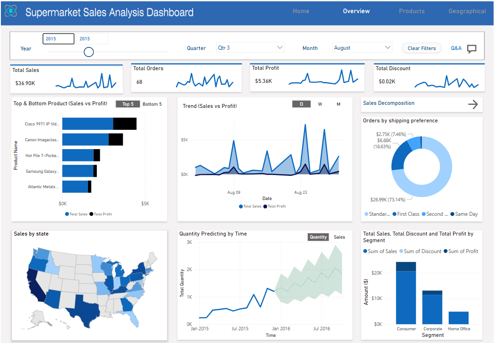
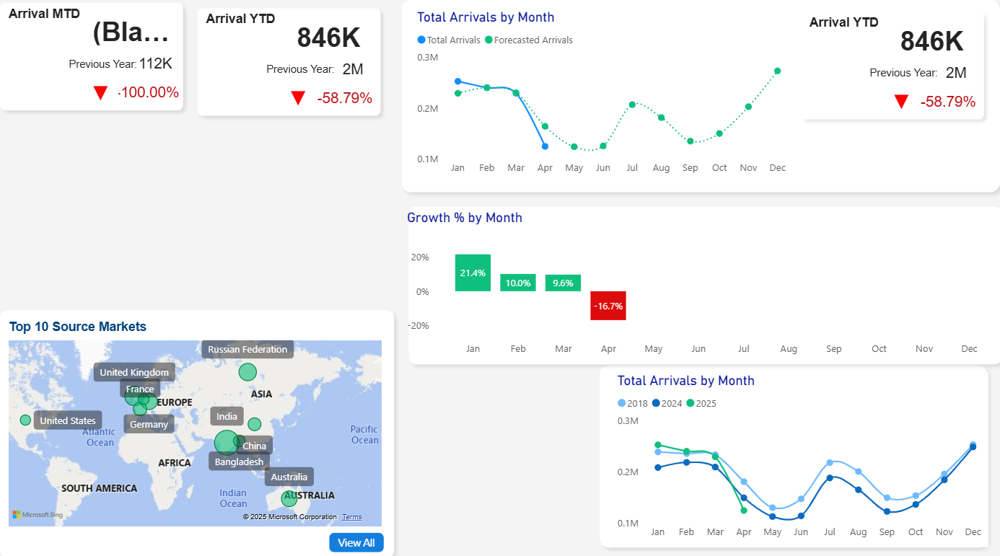

Featured Projects
Maven Cafe Rewards Challenge
SQL and Tableau analysis of a loyalty program at a fictional café to identify trends and customer behavior patterns.
Maven Hospital Challenge
Power BI dashboard analyzing synthetic hospital data featured in JAMA to uncover key performance indicators.

Predicting Bank Customer Churn
Used SQL, R, and Excel to develop a decision tree model predicting customer churn from a dataset of 100,000 records.

Global CO₂ Emissions Dashboard
Interactive Tableau dashboard visualizing global carbon emissions from 1750–2021 using historical environmental data.

Pizza Place Sales Dashboard
SQL and Power BI exploration of yearly sales trends and performance across product categories at a fictional pizza place.
Sri Lanka Tourism Arrival Analysis
Power BI and SQL-based interactive dashboard showcasing trends in international tourist arrivals to Sri Lanka, highlighting strategic opportunities.